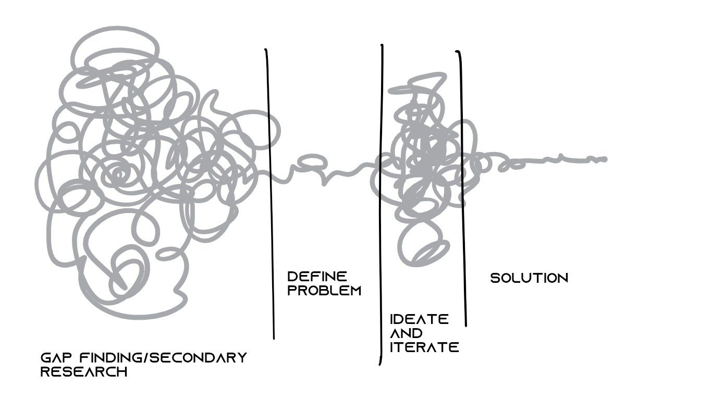

A design process in my perspective can be broadly divided into 4 phases as depicted in the swiggle above.
Personally I feel the design process begins with finding a gap within an existing scenario which needs to be validated by secondary research and needs to be backed up by relative primary research.
The objective of this phase is to formulate a mission statement or design brief that includes identification of target segments, businesses goals, stakeholders, assumptions, and both product-centered and user-centered restrictions. The inputs of this phase take into account the corporate strategy, an assessment of available technology, and market objectives.
The conceptualization of designs aims to develop ideas into concepts without worrying about the finer constraints. This phase is essential for ensuring a creative and objective approach is used. Once a few concepts are selected, repeated prototyping and testing is performed.
On development of the final solution, the product/service is launched into the market and is studied for further gaps, if any, the process can be rerouted to any stage and restarted.